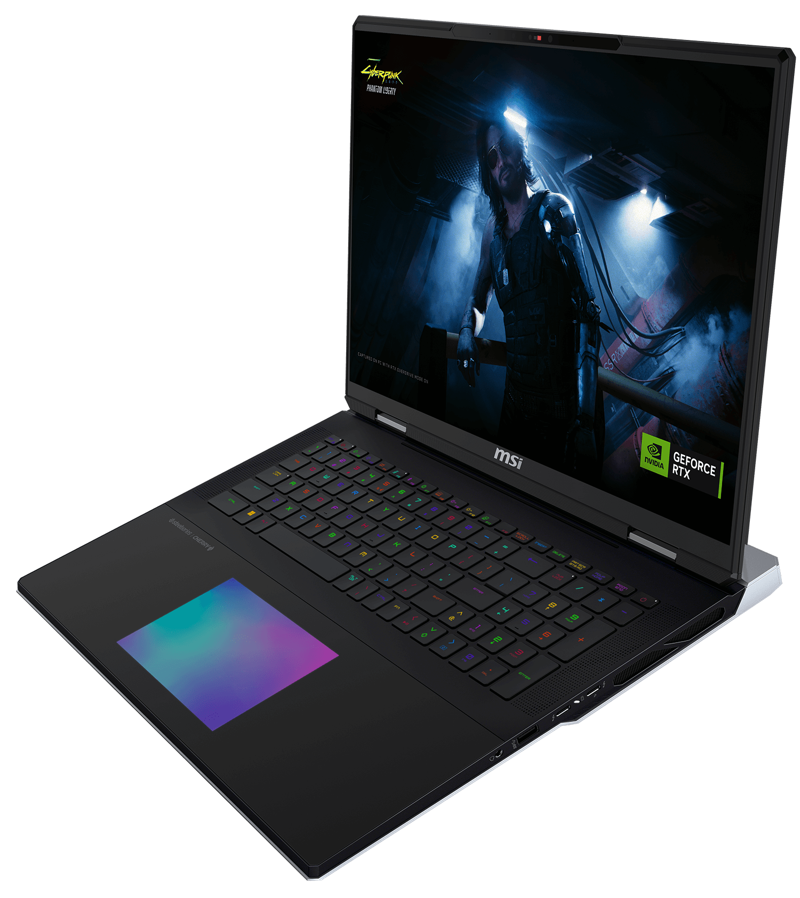

PC
MSI titan 18 Hx
This 18-inch powerhouse packs a fresh Intel 14th Gen "Raptor Lake Refresh" Core i9 HX processor ,an RTX 4090 GPU, a whopping 128GB of memory, a 4TB solid-state drive, and a 4K 120Hz mini LED display. Enthusiast gamers are more than covered, meaning this is a machine for demanding media, processing, or data-crunching tasks—in addition to gaming. When you see an 18-inch gaming laptop, it needs little introduction: You can rightly assume it’s going for power. That’s even more the case for the Titan 18 than others, as the name suggests, pulling no punches in its design or choice of high-end components Older big-screen laptops used to go even bigger, so the Titan is perhaps relatively "compact" versus the behemoths of old, but it’s still a beast when put against most modern laptops. Specifically, it measures 1.25 by 15.9 by 12 inches and weighs 7.93 pounds, a reasonable footprint for an 18-inch system, but sparing little concern for weight. Laptops of this size, bluntly, are not meant to be moved much these are desktop-replacement devices, giving you a monitor like experience The Titan’s prodigious size benefits both the component and performance potential , and, of course, the display. This roomy 18-inch screen comes in only one flavor, unlike many gaming laptops, but it’s a super-advanced UHD+ (3,840-by-2,400 resolution) 120Hz mini LED panel. The only room for moderate disappointment is the 120Hz refresh rate. For enthusiast gamers, some games (particularly competitive multiplayer titles) benefit from 165Hz, 240Hz, or even more, though in the case of a 4K screen you'd attain those only at lower resolutions, in any case, given the limits of the GPU for most games. Otherwise, the screen looks sharp and bright, and the 4K resolution makes it ideal for professional and creative uses outside of gaming, too. For gaming, many laptops can’t justify a 4K display with their components, this machine can still push high frame rates at 4K.